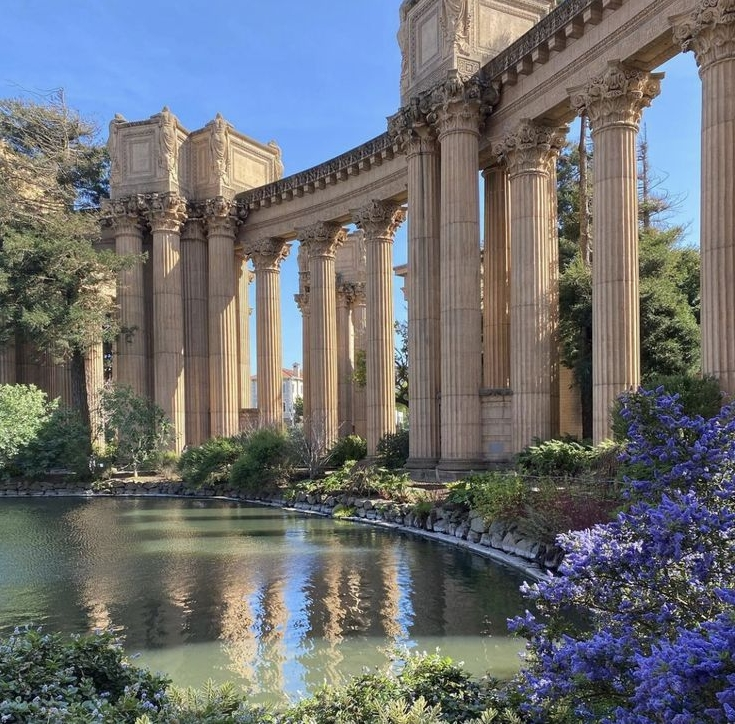
The Palace of Fine Arts is a monumental structure originally built for the 1915 Panama Pacific International Exposition to exhibit works of art.
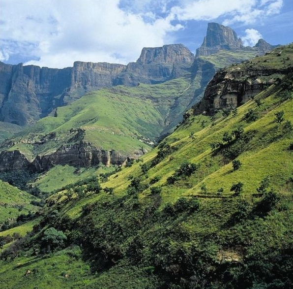
The Drakensberg remains one of Africas most dramatic mountain landscapes, combining geological grandeur, cultural heritage, and exceptional biodiversity.
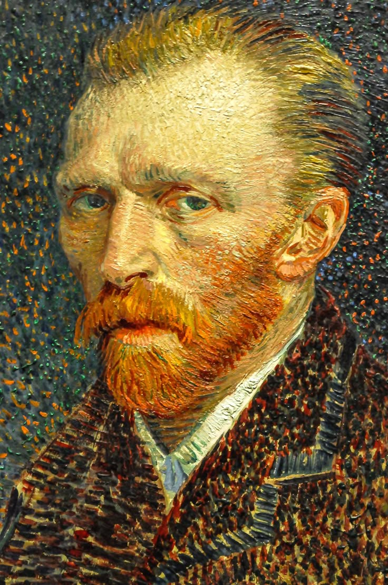
Vincent van Gogh painted numerous self portraits—over 35 in total—with one of his final and most famous created in 1889 at the Saint Rémy asylum, now held at the Musée dOrsay in Paris.
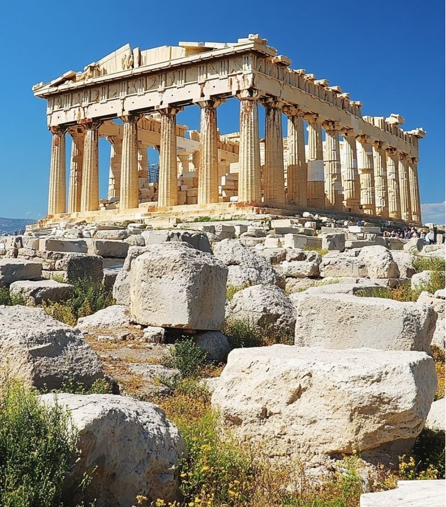
The Parthenon was originally used as a temple dedicated to Athena
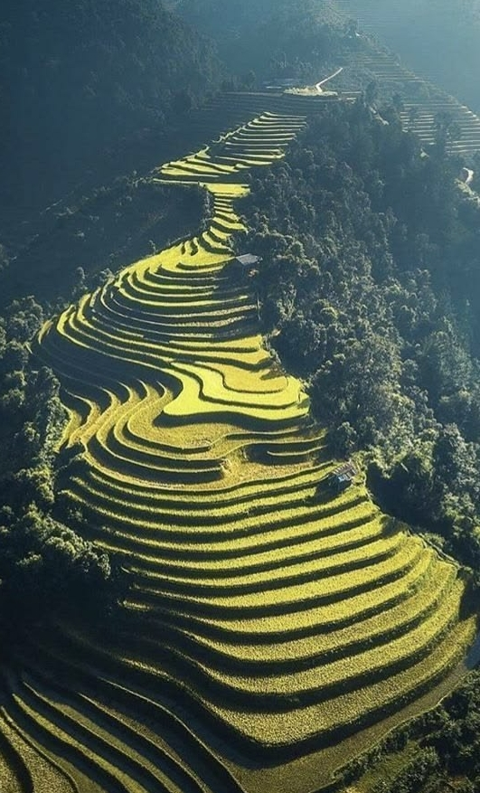
Sapa is one of northern Vietnam most famous mountain towns, Known for its misty valleys, rice terraces, and ethnic minority villages, it offers a unique mix of natural beauty and cultural heritage.
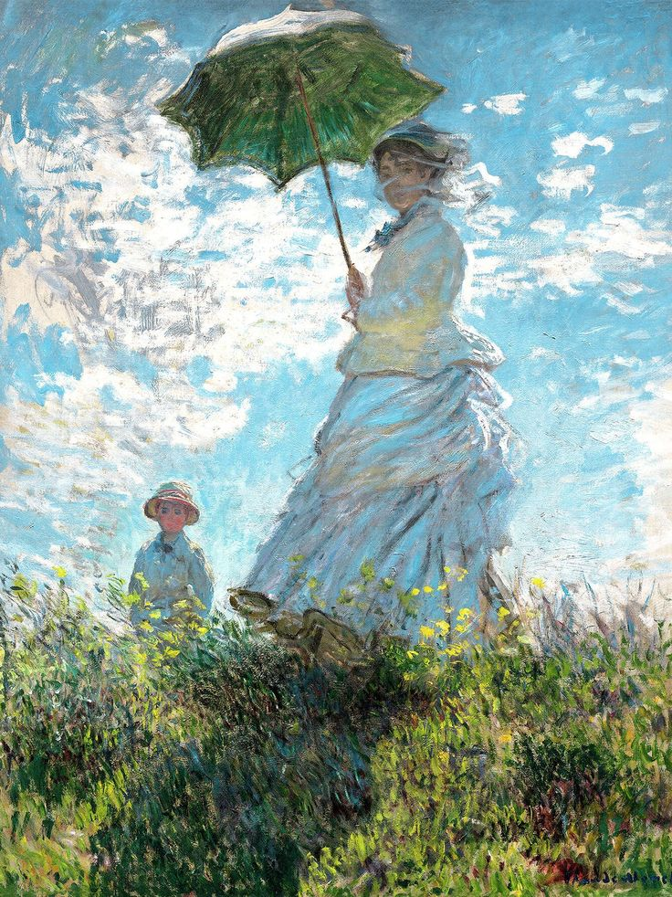
“Woman with a Parasol, Madame Monet and Her Son” is an 1875 oil-on-canvas painting by Claude Monet, depicting his wife Camille Monet and their son Jean during a windy outdoor stroll.
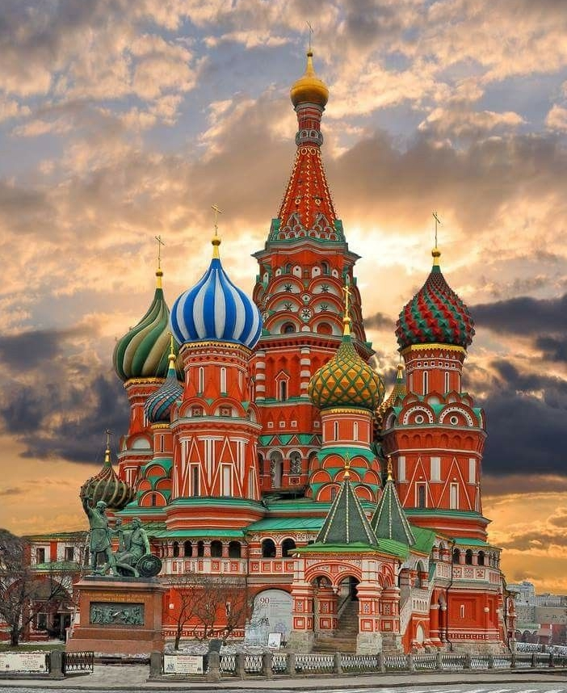
St Basil's Cathedral, an iconic symbol of Russia, is a 16th-century Russian Orthodox church on Red Square, renowned for its colorful onion domes and unique architecture.
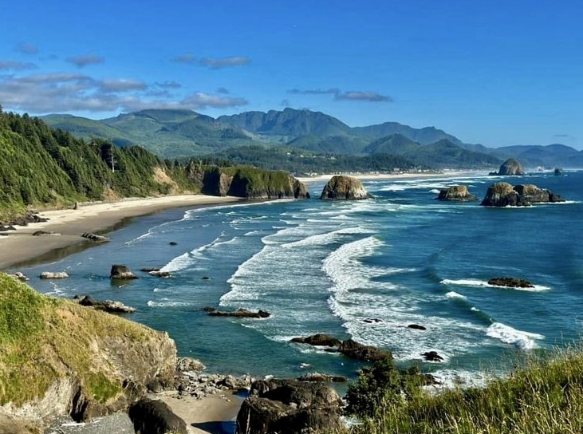
Crescent Beach is a secluded, scenic cove between Ecola Point and Chapman Point, with views of sea stacks, tide pools, and ocean wildlife
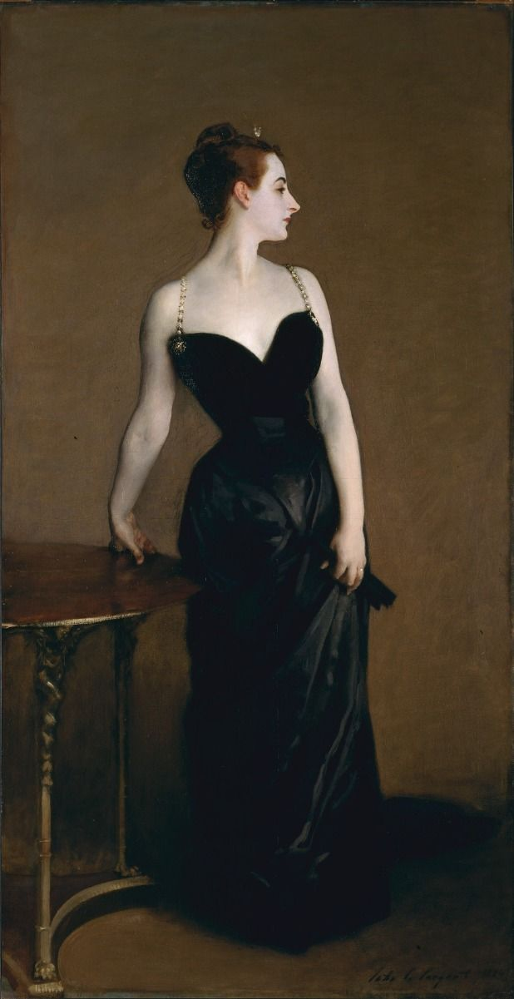
Madame X or Portrait of Madame X is an 1884 portrait painting by John Singer Sargent of a young socialite, Virginie Amélie Avegno Gautreau, wife of the French banker Pierre Gautreau.
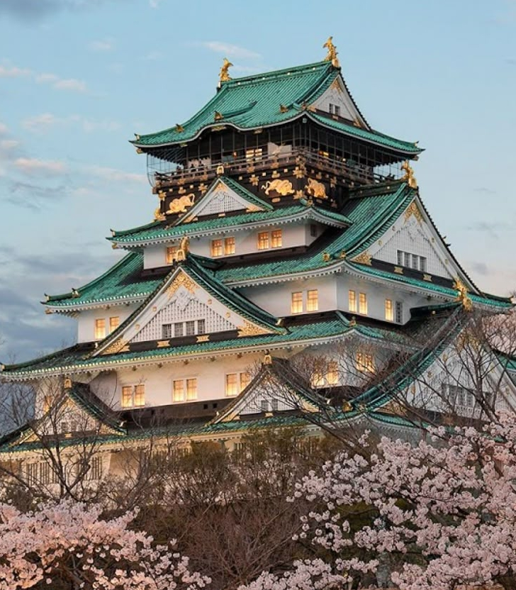
Osaka Castle is a major historic landmark in Osaka, originally built in 1583 by Toyotomi Hideyoshi and now known for its iconic five story main tower, expansive moats, and its role in Japans unification.
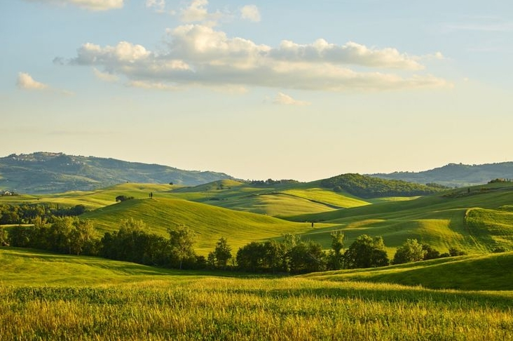
Tuscanys rolling hills form a harmonious blend of natural beauty, agricultural tradition, and Renaissance design, with Val dOrcia standing as the regions most iconic landscape.
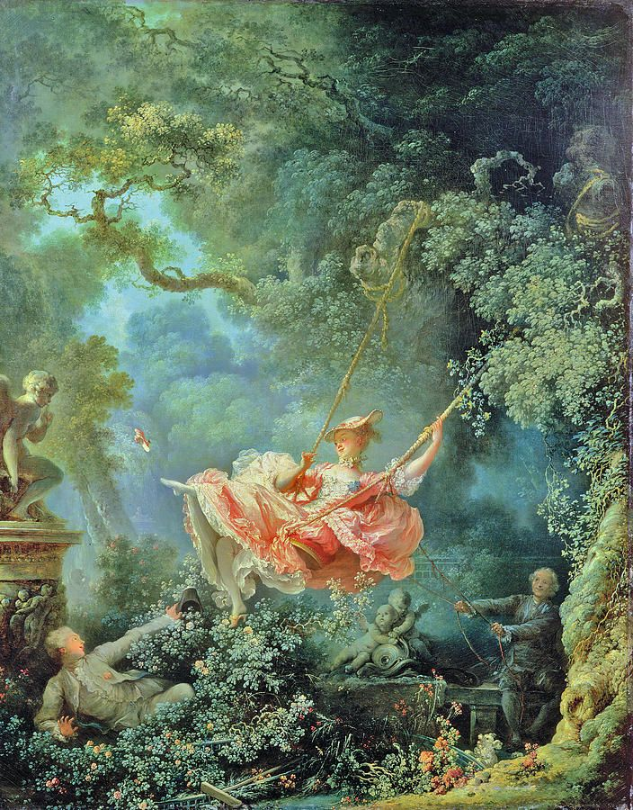
A gentleman of the court reportedly requested the painter represent his mistress being pushed on a swing as he secretly admired her from below.